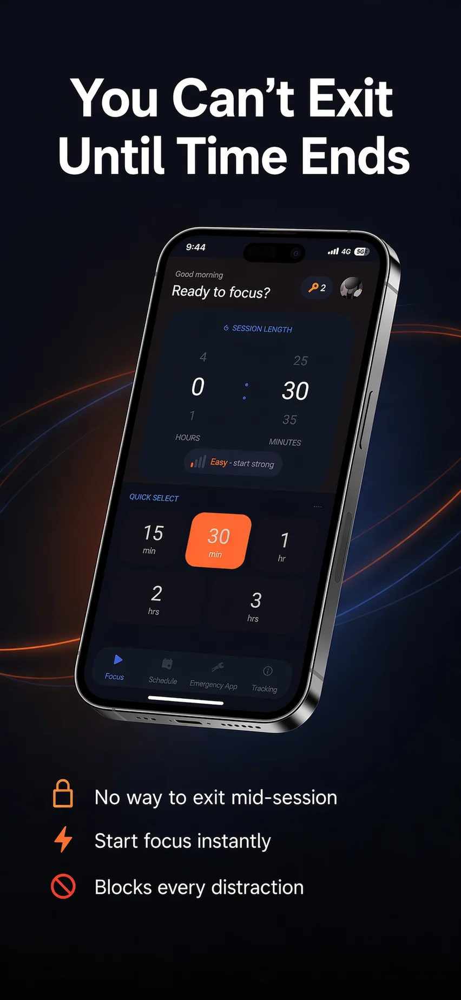
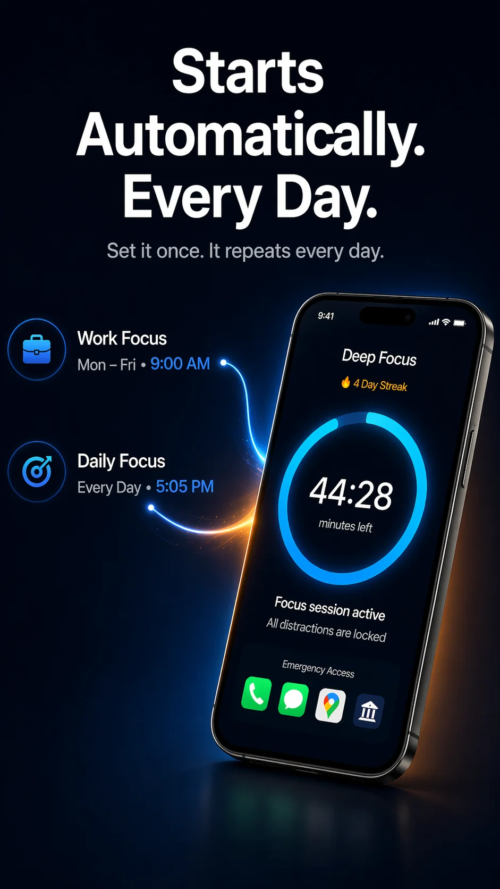
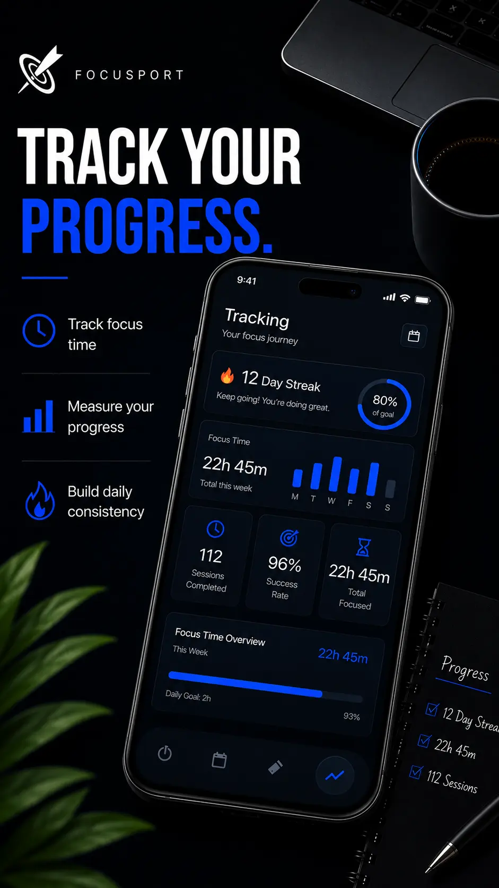

FocusPort is a dedicated digital wellness app. We don't ask you to use discipline — our code enforces it with strict accessibility blocks.
Accessibility Blocker. Focus Lock. Whitelist Control.
// How it blocks
Our tools are engineered to block scrolling habits at the root.
FocusPort utilizes Android's Accessibility Service to scan when you try to open a blocked application. If detected, it immediately launches the focus lock screen over it, stopping your scroll reflex instantly.
Unlike other blockers that allow easy pausing, FocusPort has no "snooze" button. Once a focus session starts, it stays active. If you must exit due to an emergency, you have to long-press for 5 seconds, which resets your streak.
Set a scheduled session once and forget it. FocusPort automatically launches focus timers during your recurring work hours or study blocks, forcing digital wellbeing without manual friction.
// Whitelist Control
A digital detox shouldn't mean losing phone functionality when you need it. FocusPort isolates distracting apps while keeping tools you need safe.
Whitelisted apps remain 100% accessible. You can easily access work utilities, maps, banking, or direct call systems. Only the social feeds, short-form reels, and addicting games are kept behind the lock.
Standard App Lock features
FocusPort Granular Whitelisting
// Digital Wellness Engine
Track your lock history and screen time metrics. Analyze how many times you attempted to check blocked apps and see your focus times improve.
Your data stays on your device. FocusPort does not require internet connection to block apps, keeping your information private.
Our background detection service is heavily optimized. It utilizes negligible battery, avoiding performance issues common with traditional screen time apps.
// App Screens
Clean layouts with high contrast so you get in, set your timer, and get out.



// Digital Detox
Download FocusPort to experience strict accessibility-level blocking today.